Clase 11 "Armamos el carrito, paso a paso"
Cómo trabajamos
- Conectar solo lo del paso, con el interruptor apagado
- Medir lo que dice la diapositiva
- Si no da lo mismo, no seguimos: levantan la mano
- Todo a 6 V: 4 pilas AA, nada de la pila de 9 V
Lo que vamos a armar: 20 pasos
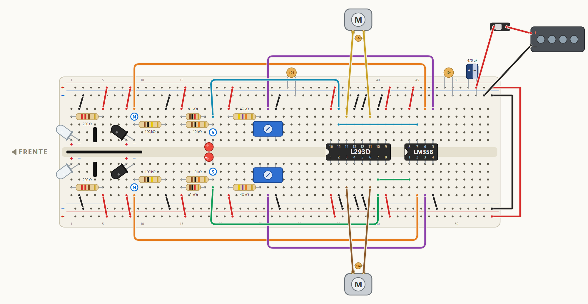
El sensor izquierdo, los motores, el sensor derecho y los condensadores.
Paso 1 · Alimentación de 6 V Ver HTML de este paso

Conectar
- Pila al interruptor y de ahí al positivo (fila de afuera)
- Cable negro de la pila al negativo (fila de adentro)
Debe dar
Entre el positivo y el negativo: 5,6 a 6,4 V.
Paso 2 · El emisor izquierdo Ver HTML de este paso

Conectar
- R1 (220 Ω) del positivo a la pata larga del LED infrarrojo
- Pata corta del LED al negativo
- El LED va al frente, inclinado hacia afuera
Debe dar
Entre las dos patas del LED infrarrojo: 1,2 V. Con la cámara del celular se ve luz morada.
Paso 3 · El receptor izquierdo y R3 (100 kΩ) Ver HTML de este paso
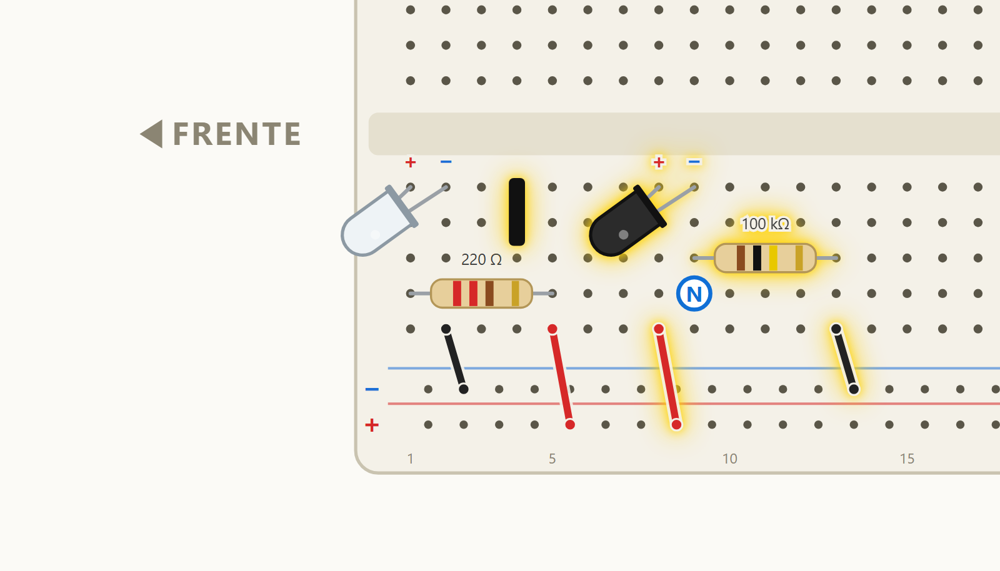
Conectar
- Pata corta del receptor al positivo
- Pata larga a una fila libre: esa fila es N
- R3 (100 kΩ) de N al negativo
- Barrera opaca entre emisor y receptor
Debe dar
En la fila N, sin nada enfrente: casi 0 V. Con el LED infrarrojo a 1 cm del receptor: sube bastante.
Si no responde bien: probar con 10 kΩ o con 1 kΩ.
Paso 4 · El LM358, alimentado Ver HTML de este paso
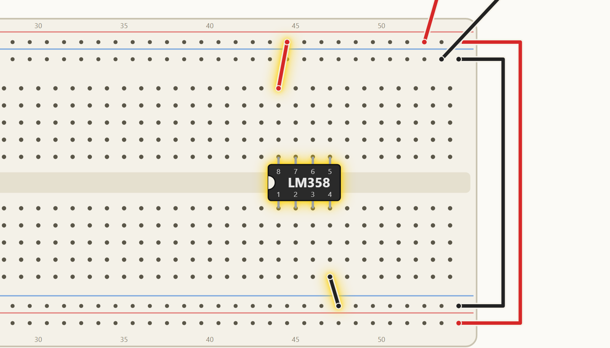
Conectar
- LM358 a caballo del canal, la muesca a la izquierda
- Pata 8 al positivo
- Pata 4 al negativo
Debe dar
Pata 8: 5,6 V. Pata 4: 0 V.
Paso 5 · El umbral izquierdo: R5 y el potenciómetro Ver HTML de este paso
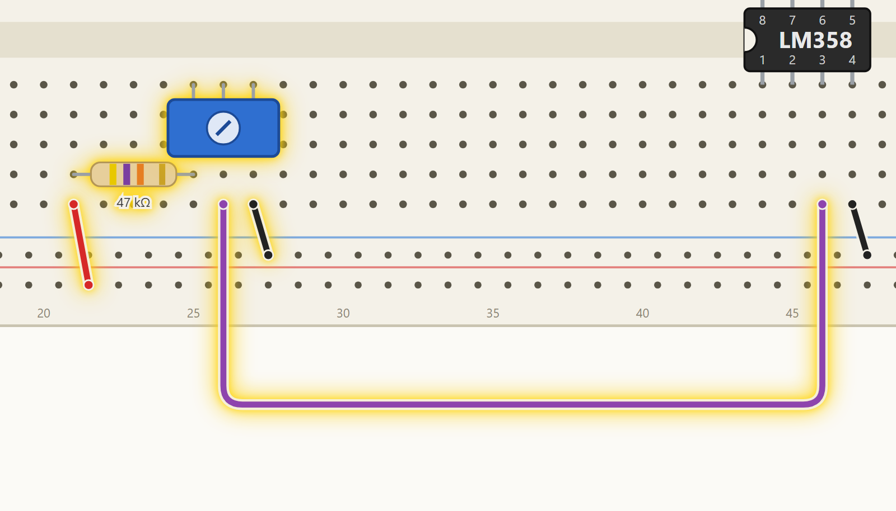
Conectar
- R5 (47 kΩ) del positivo a un extremo del potenciómetro
- La otra pata del extremo al negativo
- La pata del centro a la pata 3 del LM358
Debe dar
Pata 3 al girar el potenciómetro: de 0 V a unos 0,8 V.
Paso 6 · El receptor a la pata 2 Ver HTML de este paso
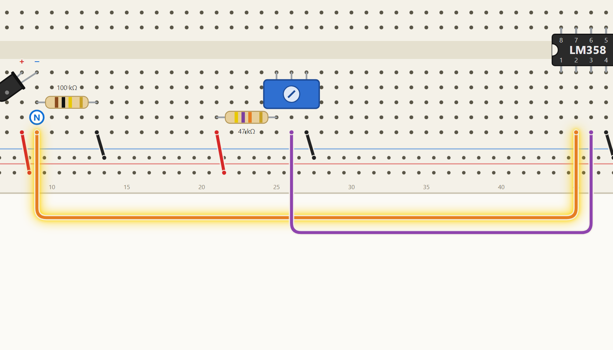
Conectar
- Un cable de la fila N a la pata 2 del LM358
Debe dar
Pata 2 = lo mismo que la fila N: casi 0 V y sube con el LED infrarrojo cerca del receptor.
Paso 7 · El LED rojo Ver HTML de este paso
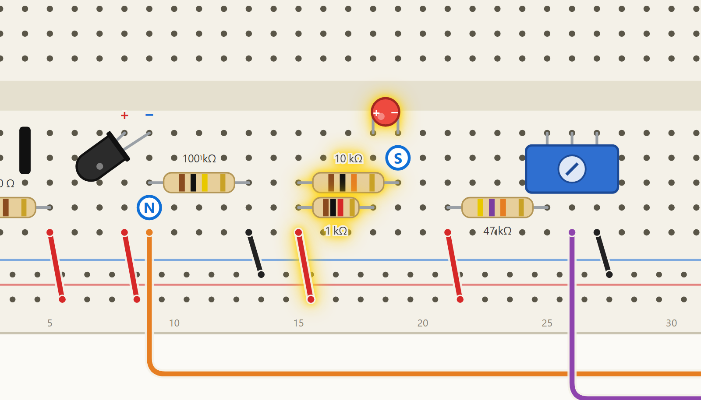
Conectar
- R2 (1 kΩ) del positivo a la pata larga del LED rojo (misma columna de 5 huecos)
- Pata corta del LED en una fila libre: esa fila es S
- R4 (10 kΩ) del positivo a la fila S
Debe dar
El LED está apagado. Si unes S con el negativo, el LED prende.
Paso 8 · La pata 1 a S Ver HTML de este paso
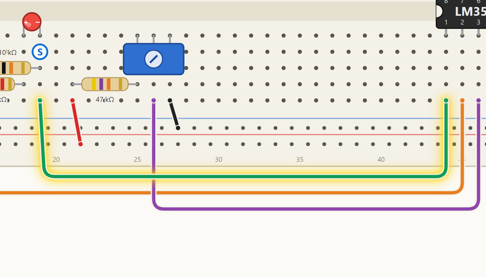
Conectar
- Un cable de la pata 1 del LM358 a la fila S
Debe dar
Tocar la pata 2 con un cable al positivo: el LED prende. Ajustar el potenciómetro (pata 3 cerca de 0,4 V): prende con la mano y se apaga sin nada enfrente.
Paso 9 · El L293D, alimentado Ver HTML de este paso
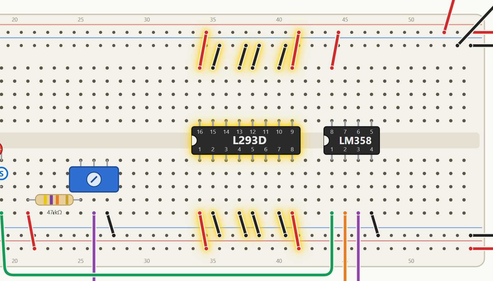
Conectar
- L293D a caballo del canal, la muesca a la izquierda
- Patas 1, 8, 9 y 16 al positivo
- Patas 2, 4, 5, 7, 10, 12, 13 y 15 al negativo
Debe dar
Pata 16: 5,4 V. El chip no se calienta.
Paso 10 · Motor 1 y el sensor izquierdo Ver HTML de este paso
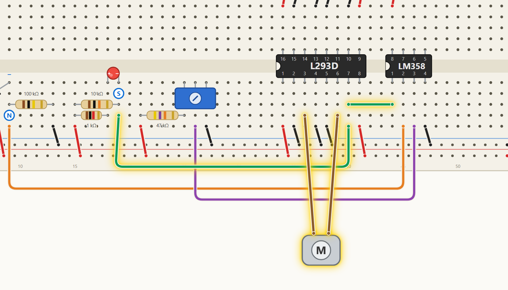
Conectar
- Motor 1 a las patas 3 y 6
- Pata 7: del negativo a la fila S
- Puente de la pata 7 del L293D a la pata 1 del LM358; se quita el cable de la pata 1 a S
Debe dar
Sin nada enfrente el motor gira. Con la mano se frena y el LED prende.
Paso 11 · Motor 2 (quieto por ahora) Ver HTML de este paso
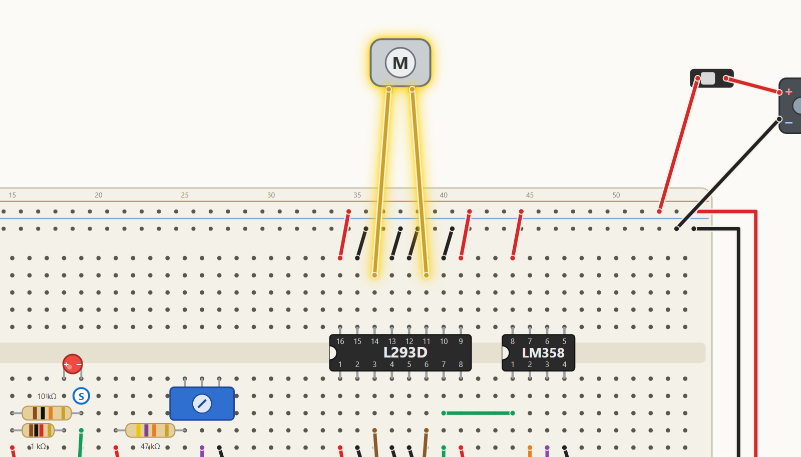
Conectar
- Motor 2 a las patas 14 y 11
- La pata 15 sigue al negativo
Debe dar
El motor 2 no gira; el motor 1 sigue igual.
Paso 12 · El emisor derecho Ver HTML de este paso
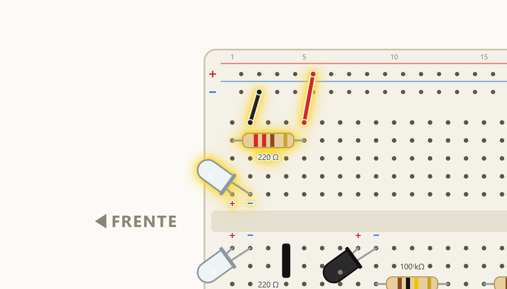
Conectar
- R1 (220 Ω) del positivo a la pata larga del LED infrarrojo
- Pata corta del LED al negativo
- El LED va al frente, inclinado hacia la derecha
Debe dar
Entre las dos patas del LED infrarrojo: 1,2 V y luz morada en la cámara.
Paso 13 · El receptor derecho y R3 (100 kΩ) Ver HTML de este paso
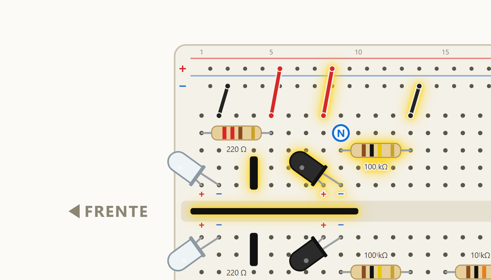
Conectar
- Pata corta del receptor al positivo
- Pata larga a una fila libre: N derecha
- R3 (100 kΩ) de N al negativo
- Barrera entre emisor y receptor y pared entre los dos sensores
Debe dar
En la fila N derecha: casi 0 V y sube bastante con el LED infrarrojo a 1 cm del receptor.
Si no responde bien: probar con 10 kΩ o con 1 kΩ.
Paso 14 · El umbral derecho: R5 y el potenciómetro Ver HTML de este paso
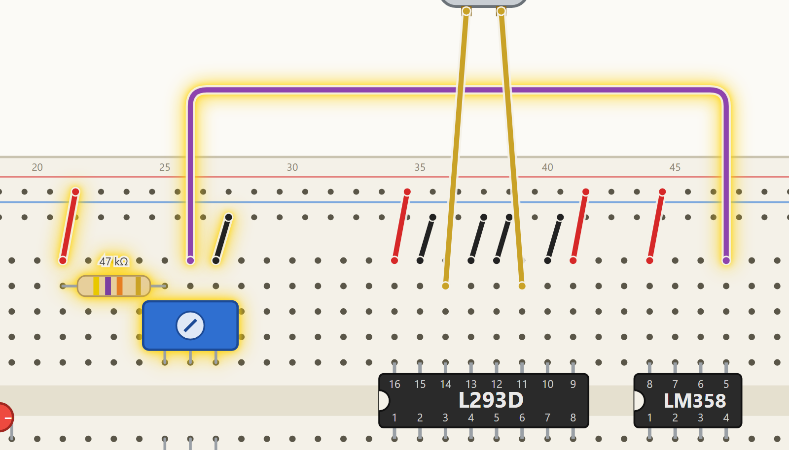
Conectar
- R5 (47 kΩ) del positivo a un extremo del potenciómetro
- La otra pata del extremo al negativo
- La pata del centro a la pata 5 del LM358
Debe dar
Pata 5 al girar el potenciómetro: de 0 V a unos 0,8 V.
Paso 15 · El receptor a la pata 6 Ver HTML de este paso
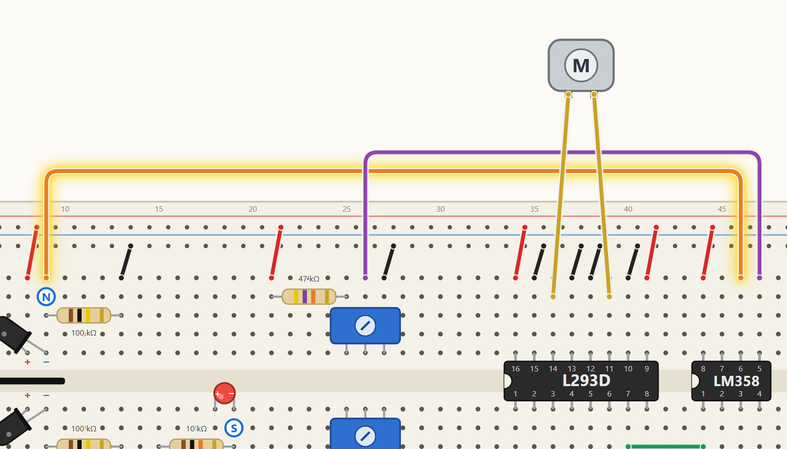
Conectar
- Un cable de la fila N derecha a la pata 6 del LM358
Debe dar
Pata 6 = lo mismo que la fila N derecha.
Paso 16 · El LED rojo derecho Ver HTML de este paso
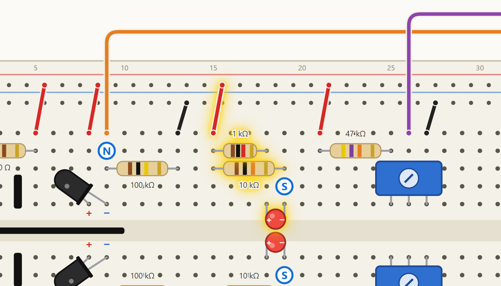
Conectar
- R2 (1 kΩ) del positivo a la pata larga del LED rojo
- Pata corta del LED en una fila libre: S derecha
- R4 (10 kΩ) del positivo a la fila S
Debe dar
El LED está apagado. Si unes S con el negativo, el LED prende.
Paso 17 · El cruce: pata 15 a S derecha Ver HTML de este paso
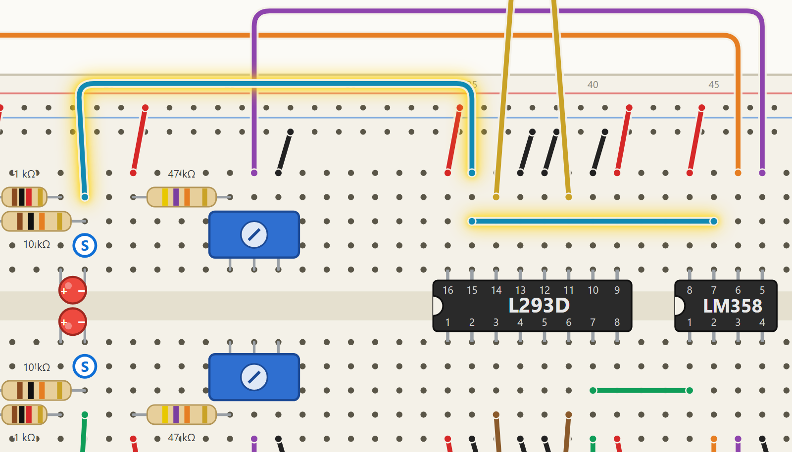
Conectar
- Pata 15 del L293D: del negativo a la fila S derecha
- Puente de la pata 15 del L293D a la pata 7 del LM358
Debe dar
Los cuatro casos: nada, giran los dos. Mano al sensor izquierdo, frena el motor 1. Mano al derecho, frena el motor 2. Mano a los dos, se frenan los dos.
Paso 18 · Los condensadores de la alimentación Ver HTML de este paso
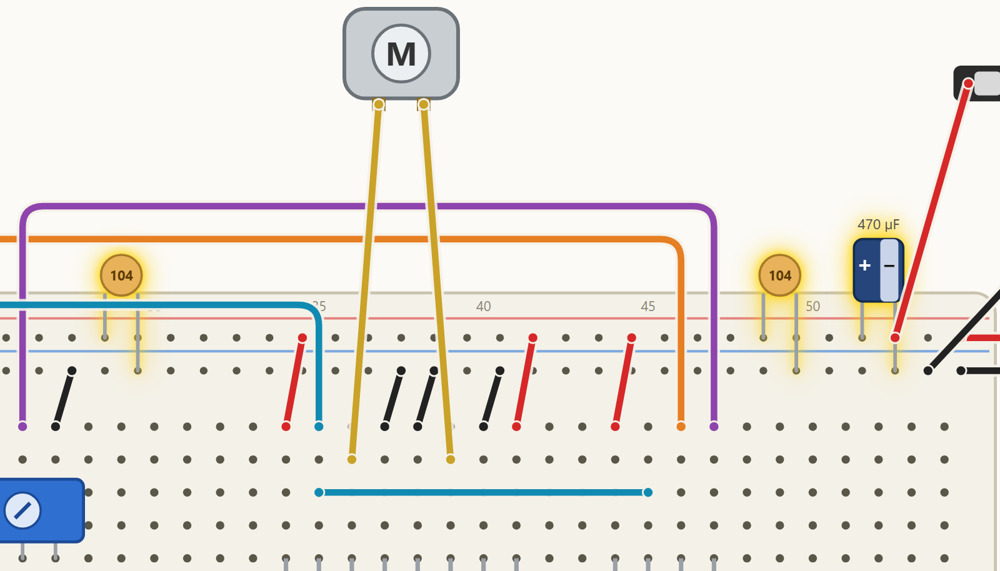
Conectar
- C1 (470 µF) entre positivo y negativo: pata larga al positivo, franja al negativo
- C2 (100 nF, marcado 104) pegado al LM358
- C3 (100 nF) pegado al L293D
Debe dar
Positivo y negativo siguen en 5,4 a 6 V. Los motores arrancan y paran sin que los LED parpadeen y sin que nada se pegue.
Paso 19 · Los condensadores de los motores Ver HTML de este paso
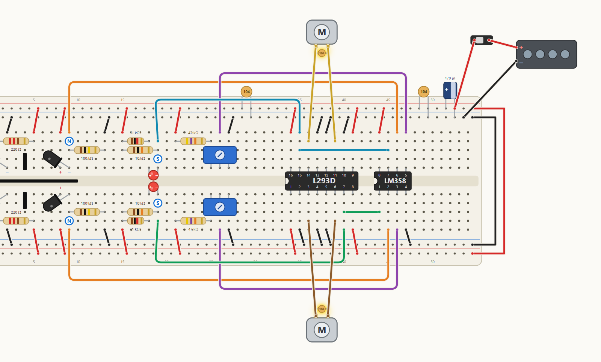
Conectar
- C4 y C5 (100 nF) directo entre los dos terminales de cada motor
Debe dar
Poner y quitar la mano rápido: los LED no parpadean y nada se pega.
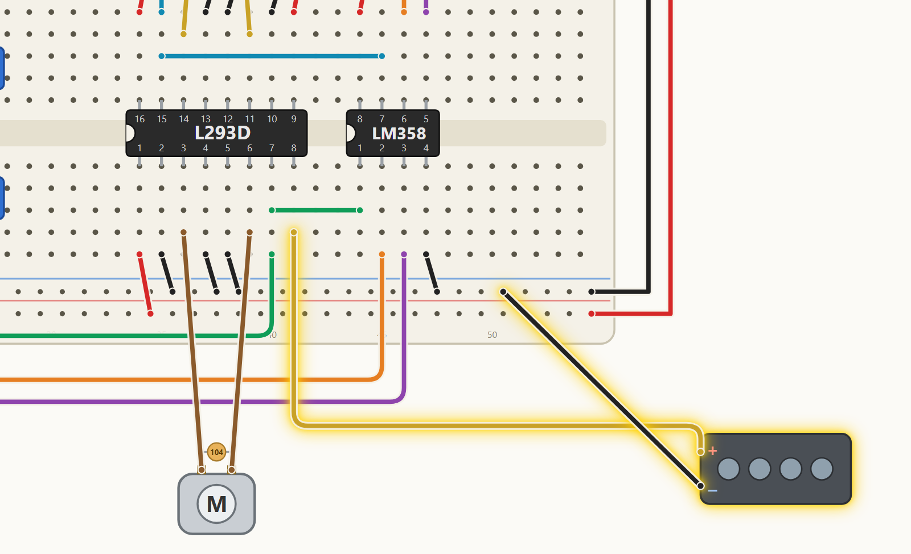
Conectar
- Pata 8 del L293D: del positivo al positivo del pack de motores
- Negativo del pack al negativo del circuito
- La pata 16 sigue en el positivo de 6 V
Debe dar
Pata 16: 5,4 a 6 V. Pata 8: el voltaje del pack. Los motores giran más fuerte.
Si me quieren agregar
Correo institucional:
jjardila@libertadores.edu.co